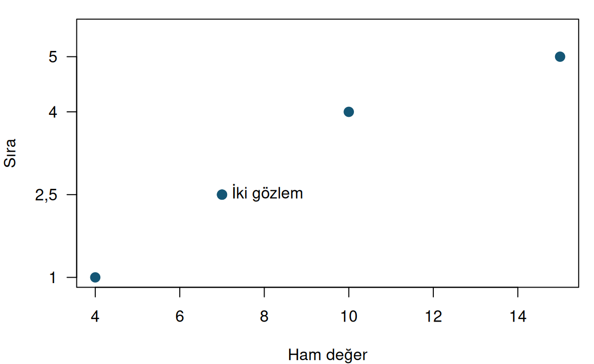
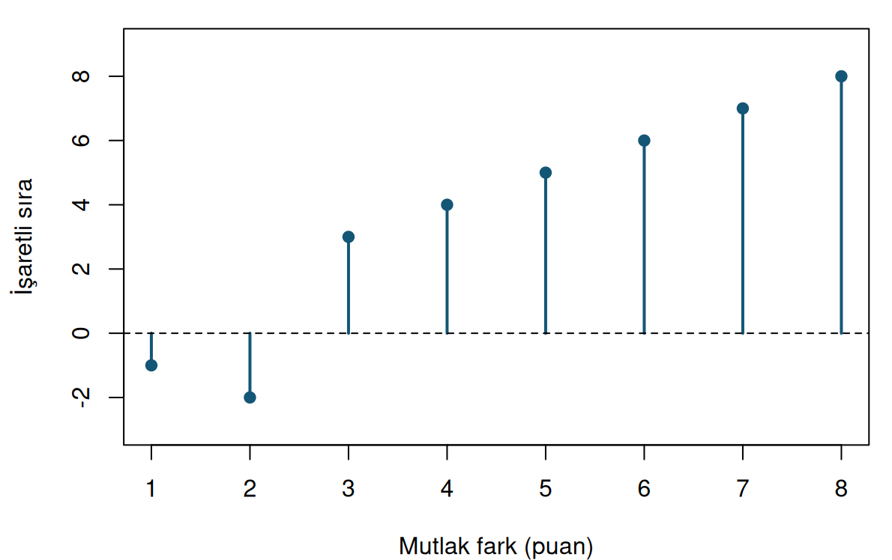
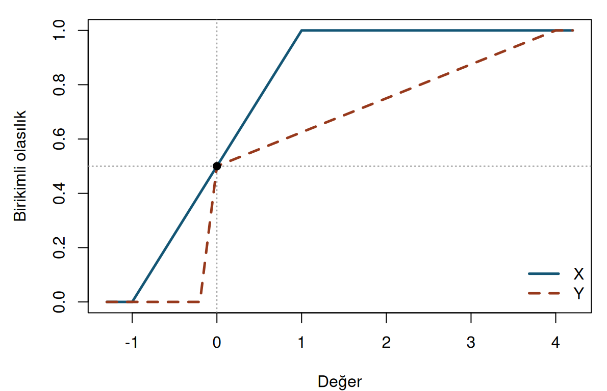

deger <- c(4, 7, 7, 10, 15)
rank(deger)[1] 1.0 2.5 2.5 4.0 5.0Beş müşterinin bekleme süresi 4, 7, 7, 10 ve 45 dakika olsun. Toplam bekleme yükünü inceliyorsak 45 dakikanın büyüklüğü önemlidir. Rastgele iki müşteriden hangisinin daha uzun beklediğini inceliyorsak göreli sıra yeterlidir. Bölüm 30 bölümündeki ortalama ve medyan ayrımı burada araştırma hedefiyle ilgilidir.
Bölüm 35 bölümünde eğitim öncesi ve sonrası ölçümler aynı kişiye, iki üretim hattının ölçümleri ayrı paketlere aitti. Bu bölüm aynı tasarım ayrımıyla işaretleri, sıraları ve dağılımlar arasındaki göreli konumu inceler. Her yöntemin hangi hipotezi sınadığını, referans dağılımını nasıl kurduğunu ve etkiyi nasıl raporlayabileceğimizi göreceğiz. Tüm veriler sentetiktir. Kodlar temel R ile gelen stats ve graphics işlevlerini kullanır.
Parametrik modelde dağılım ailesi sonlu sayıda parametreyle belirlenir. Örneğin normal ailede ortalama ve varyans dağılımı tanımlar. Parametrik olmayan çıkarım dağılımın biçimini böyle bir aileye sabitlemeden yapılabilir. Medyan gibi bir anakütle niceliği yine tanımlanabilir. Her yöntemin geçerliliği tasarımdan ve hipotezden gelen koşullara dayanır. Bağımsızlık, simetri ve sıfır hipotezi altında etiketlerin değiştirilebilirliği bu bölümde farklı roller üstlenir (Casella ve Berger 2002; Fay ve Proschan 2010).
Bir sıra gözlemin küçükten büyüğe dizideki yeridir. İki 7 ikinci ve üçüncü yerleri paylaşır. Her birine ortalama sıra \((2+3)/2=2{,}5\) verilir. Bağlar toplam sırayı korur fakat olası sıra toplamlarını ve değişkenliğini etkiler. Bir gözlem önce 10, sonra 11 veya 100 olabilir. Her iki artışta da diğer gözlemleri aynı biçimde geçtiyse sıra bilgisi aynıdır. Uç değerin büyüklüğünden gelen etki sınırlanır, dakika cinsinden uzaklık bilgisi kaybolur.
deger <- c(4, 7, 7, 10, 15)
rank(deger)[1] 1.0 2.5 2.5 4.0 5.0Şekil 36.1 ham ölçekle sıra ölçeğini karşılaştırır. 7 değerindeki iki gözlem grafikte çakışır.
par(mar = c(4, 4, 1, 0.8), bg = "white")
plot(deger, rank(deger), pch = 19, cex = 1.3, col = "#145675",
xlab = "Ham değer", ylab = "Sıra", yaxt = "n", ylim = c(1, 5.5))
axis(2, at = c(1, 2.5, 4, 5), labels = c("1", "2,5", "4", "5"), las = 1)
text(7, 2.5, "İki gözlem", pos = 4)
Bağımsız gruplar arasında kategori sırası bilinen bir hizmet puanı karşılaştırılabilir. Farkların mutlak büyüklüğünü sıralamak için ise çıkarma işleminin anlamlı olduğu bir ölçek gerekir.
\(i\) kişiyi, \(Y\) ölçüm puanını ve \(D_i=Y_{i,\mathrm{sonra}}-Y_{i,\mathrm{önce}}\) kişi farkını göstersin. Analiz birimi kişidir. Kişilerin farkları birbirinden bağımsız kabul edilir. İşaret testi ortak bir artış olasılığı için şu hipotezi sınar:
\[ H_0:P(D>0\mid D\ne0)=\tfrac12 . \]
Sıfır farklarını raporlarız ve işaret hesabının paydasından çıkarırız. \(m\) sıfır olmayan fark sayısı, \(K\) ise bunlar içindeki pozitiflerin sayısıdır. Bağımsız ve ortak olasılıklı işaretler altında, \(m\)’ye koşullandığımızda her işaret adil bir Bernoulli denemesidir. Bu nedenle \(K\mid m\sim\operatorname{Binom}(m,1/2)\) olur. Bölüm 31 bölümündeki binom hesabına göre \(k\) pozitif işaretin olasılığı \(\binom{m}{k}/2^m\)’dir. Pay \(k\) pozitif yer seçmenin yollarını, payda bütün işaret düzenlerini sayar.
Sekiz sentetik fark \(-1,-2,3,4,5,6,7,8\) olsun. Altı artış ve iki azalış var. İki yönlü p-değeri en az altı ve en çok iki artış olasılıklarını toplar. Her kuyrukta \(1+8+28=37\) düzen vardır. Sonuç \(74/256=0{,}2890625\) olur.
once <- c(42, 40, 48, 45, 37, 51, 46, 44)
sonra <- c(41, 38, 51, 49, 42, 57, 53, 52)
fark <- sonra - once
isaret <- binom.test(sum(fark > 0), sum(fark != 0))
c(sifir = sum(fark == 0), artis_payi = mean(fark[fark != 0] > 0),
p = isaret$p.value) sifir artis_payi p
0.0000000 0.7500000 0.2890625 isaret$conf.int[1] 0.3491442 0.9681460
attr(,"conf.level")
[1] 0.95Artış payı 0,75 ve tam binom %95 güven aralığı yaklaşık 0,35–0,97’dir. Hedef, değişen kişiler arasındaki artış oranıdır. Sürekli bir fark dağılımında \(P(D=0)=0\) olur. Medyan da tekse işaret dengesi medyanın sıfır olmasına karşılık gelir. Örneğin farkların %60’ı sıfır ve %40’ı pozitifse medyan yine sıfırdır, fakat değişenlerin hepsi artmıştır.
Eğitim örneğinde altı artışın mutlak büyüklükleri iki azalıştan daha büyük. Wilcoxon işaretli sıralar yaklaşımı bu örüntüye ağırlık verir (Wilcoxon 1945). Önce kişi farklarını alırız. Buradaki kuralda sıfırları çıkarır, kalan \(|D_i|\) değerlerini birlikte sıralarız. Bağlı mutlak farklar ortalama sıra alır. \(R_i\) kişinin mutlak fark sırası olsun. Artı ve eksi sıraları ayrı toplarız:
\[ \begin{aligned} W^+&=\sum_{i:D_i>0}R_i,\\ W^-&=\sum_{i:D_i<0}R_i . \end{aligned} \]
Toplamları \(m(m+1)/2\) olduğundan biri ötekini belirler. Eğitim örneğinde ilk iki sıra eksidir ve \(W^-=3\) olur. Kalan altı sıra artıdır ve \(W^+=33\) olur. R pozitif toplamı V adıyla raporlar.
degisen <- fark[fark != 0]
mutlak_sira <- rank(abs(degisen))
W_arti <- sum(mutlak_sira[degisen > 0])
W_eksi <- sum(mutlak_sira[degisen < 0])
esli <- wilcox.test(sonra, once, paired = TRUE, exact = TRUE)
fark_testi <- wilcox.test(fark, exact = TRUE)
c(arti = W_arti, eksi = W_eksi, V = unname(esli$statistic),
esli_p = esli$p.value, fark_p = fark_testi$p.value) arti eksi V esli_p fark_p
33.0000000 3.0000000 33.0000000 0.0390625 0.0390625 Şekil 36.2’da sıfır çizgisinin altında yalnız küçük sıralar vardır. Grafik, ham işaret sayımına eklenen bilgiyi gösterir.
par(mar = c(4, 4.3, 1, 0.8), bg = "white")
isaretli_sira <- sign(degisen) * mutlak_sira
plot(abs(degisen), isaretli_sira, type = "h", lwd = 2, col = "#145675",
xlab = "Mutlak fark (puan)", ylab = "İşaretli sıra", ylim = c(-3, 9))
abline(h = 0, lty = 2)
points(abs(degisen), isaretli_sira, pch = 19, col = "#145675")
\(H_0\) altında bağımsız farklar sıfır çevresinde simetriktir. Sabit bir sıfır olmayan mutlak fark için iki işaret eşit olasılıklıdır. Mutlak değerlere koşullanınca \(2^m\) düzenin her biri \(2^{-m}\) olasılık alır. Bağlı mutlak farklar da bu gerekçeye uyar, ancak farklı atamalar aynı toplamı daha sık verebilir.
1, 2 ve 3 sıraları için pozitif sıra kümeleri sırasıyla boş küme, tek başına 1, 2 ve 3, ikili 1–2, 1–3 ve 2–3, son olarak üçünün tümü olsun. Toplamlar \(0,1,2,3,3,4,5,6\) olur. Üç pozitif fark için sağ kuyruk \(1/8\), iki yönlü tam p-değeri \(2/8=0{,}25\)’tir.
duzenler <- as.matrix(expand.grid(rep(list(c(0, 1)), 3)))
toplamlar <- drop(duzenler %*% (1:3))
c(elle = mean(toplamlar %in% c(0, 6)),
R = wilcox.test(1:3, exact = TRUE)$p.value)elle R
0.25 0.25 Sekiz kişilik örnekte \(W^+\le3\) yapan beş düzen vardır. Boş küme, tek başına 1, 2 ve 3 ile 1–2 çifti. Simetrik çift yönlü p-değeri \(10/256=0{,}0390625\) olur. Eşleştirilmiş çağrı ve farklara uygulanan tek örneklem çağrısı aynı sonucu verir.
İşaret testi \(p=0{,}289\), işaretli sıralar \(p=0{,}039\) verir. İkinci sonucun ağırlığını büyük pozitif farklar taşır. Güç, gerçek alternatifin ne tür değişiklikler ürettiğine bağlıdır. Farklar sıfır çevresinde asimetrikse medyan sıfır olsa bile işaretler mutlak büyüklüğe koşullu olarak dengeli olmayabilir. Simetrik bir konum modelinde medyan ve merkez çakışır ve işaretli sıralar sıfır merkez iddiasını sınar. Bu yorumu asimetrik bir veri üretim mekanizmasına doğrudan taşımak testin referans gerekçesini kaybeder.
İki hizmet masasından bağımsız müşteriler seçelim. A’daki bir müşterinin bekleme süresi B’den seçilen bir müşterininkini ne sıklıkta aşar? Analiz birimi müşteridir. Sıra toplamı yöntemi bütün A–B karşılaşmalarını kullanır (Mann ve Whitney 1947; Fay ve Proschan 2010).
\(X_i\) A’nın \(i\)’inci, \(Y_j\) B’nin \(j\)’inci gözlemi, \(n_A\) ve \(n_B\) grup büyüklükleri olsun. \(I\) göstergesi koşul doğruysa 1, diğer durumda 0 değerini alır:
\[ \begin{aligned} U_A&=\sum_{i=1}^{n_A}\sum_{j=1}^{n_B} b_{ij},\\ b_{ij}&=I(X_i>Y_j)+\tfrac12 I(X_i=Y_j). \end{aligned} \]
Bir A galibiyeti bir, eşitlik yarım katkı verir. Ortak sıralardaki A toplamı \(R_A\) ise
\[ U_A=R_A-\frac{n_A(n_A+1)}{2}. \]
A kendi içinde sıralandığında toplam \(1+\cdots+n_A\) olur. B eklendiğinde her A sırası, kendisinden küçük B sayısı kadar ve her eşit B için yarım artar. Artışlar \(U_A\)’yı verir. R’nin iki örneklem sonucunda W dediği değer bu düzeltilmiş toplamdır. Bazı kaynaklarda Wilcoxon sıra toplamı ham \(R_A\)’yı belirtir.
A’nın süreleri 6, 9 ve 11, B’ninkiler 4, 6 ve 8 dakika olsun. Birleşik sırada A’nın sıraları 2,5, 5 ve 6 olur. \(R_A=13{,}5\) ve \(U_A=7{,}5\) bulunur. İlk A bir B’yi geçer, biriyle eşittir. Diğer iki A üçer B’yi geçer.
A <- c(6, 9, 11)
B <- c(4, 6, 8)
n_A <- length(A)
n_B <- length(B)
R_A <- sum(rank(c(A, B))[seq_len(n_A)])
U_A <- R_A - n_A * (n_A + 1) / 2
c(sira_toplami = R_A, U = U_A, theta = U_A / (n_A * n_B),
R_W = unname(wilcox.test(A, B, exact = FALSE)$statistic))sira_toplami U theta R_W
13.5000000 7.5000000 0.8333333 7.5000000 Bağımsız anakütle çekilişleri için \(\theta=P(X>Y)+\tfrac12P(X=Y)\), olasılıksal üstünlük niceliğidir. Örneklem tahmini \(\widehat\theta=U_A/(n_A n_B)\) olur. Burada \(7{,}5/9\approx0{,}833\) bulunur. Üstünlük sözcüğü sayısal büyüklüğü belirtir. Uzun süre bekleyen müşteri için bu bir avantaj değildir. Aynı müşteriler birden çok karşılaşmada yer aldığı için dokuz katkıyı bağımsız Bernoulli denemeleri sayamayız.
Klasik tam testte \(H_0:F_X=F_Y\), yani A ve B’nin dağılım fonksiyonları eşittir. Bağımsız ve aynı dağılımdan ölçümlerde gözlemlere grup etiketleri yeniden atanabilir. Birleşik değerlere ve grup büyüklüklerine koşullu olarak her etiket yerleşimi eşit olasılıklıdır. Bağsız iki A ve iki B varsa altı yerleşim \(0,1,2,2,3,4\) U değerlerini verir. \(U_A=4\) için iki yönlü tam p-değeri \(2/6\) olur. Bağlı değerler ayrı birimler olarak yer değiştirir ve farklı yerleşimler aynı toplamda birleşebilir.
u_duzenleri <- combn(1:4, 2, sum) - 3
c(elle = mean(u_duzenleri %in% c(0, 4)),
R = wilcox.test(c(3, 4), c(1, 2), exact = TRUE)$p.value) elle R
0.3333333 0.3333333 Eşit dağılımlar \(\theta=0{,}5\) verir. Aynı merkez çevresinde simetrik fakat yayılımları farklı iki sürekli dağılım da bu değeri verebilir. Bu ikinci durumda etiketler değiştirilebilir değildir. Yalnız üstünlüğün 0,5 olması klasik testin nominal düzeyini garanti etmez. Ayrıca bazı dağılım farkları ortalama sıraları sistematik biçimde ayırmaz. Büyük p-değeri dağılım eşitliğini kanıtlamaz (Fay ve Proschan 2010).
Ortak biçim ve konum kayması. A dağılımı B’ye sabit \(\delta\) eklenerek elde ediliyorsa ve medyanlar tekse medyan farkı \(\delta\)’dır. Bu modelde sıfır kayma, dağılım eşitliği ve medyan eşitliği aynı iddiadır. Konum aralığı bu model altında medyan farkı cinsinden okunabilir.
Aynı medyan ve farklı biçim. \(X\), \([-1,1]\) aralığında düzgün dağılsın. \(Y\) eşit olasılıkla \([-0{,}2,0]\) veya \([0,4]\) aralığından düzgün çekilsin. İki dağılım da sıfırın her iki tarafına yarı olasılık verir ve tek medyanları sıfırdır. \(X\)’in ortalaması sıfır, \(Y\)’ninki \((-0{,}1+2)/2=0{,}95\)’tir.
\(P(X>y)\), \(-1\le y\le1\) için \((1-y)/2\)’dir. Sol bileşende bu olasılık ortalama 0,55’tir. Sağ bileşende sadece \([0,1]\) katkı yapar. Bu aralığa düşme olasılığı \(1/4\), aralık içindeki ortalama üstünlük \(1/4\)’tür. Bağ olasılığı sıfır olduğundan \(\theta=\tfrac12(0{,}55)+\tfrac12(1/16)=0{,}30625\) bulunur. Şekil 36.3’da eğriler sıfırda 0,5 düzeyini paylaşır ve başka noktalarda ayrışır. Test dağılım eşitliğine karşı kanıt bulabilir. Medyan eşitliği yine de doğrudur.
par(mar = c(4, 4.5, 1, 0.8), bg = "white")
F_X <- function(x) punif(x, -1, 1)
F_Y <- function(x) (punif(x, -0.2, 0) + punif(x, 0, 4)) / 2
x <- c(-1.3, -1, -0.2, 0, 1, 4, 4.2)
plot(x, F_X(x), type = "n", xlab = "Değer", ylab = "Birikimli olasılık")
abline(h = 0.5, v = 0, col = "gray55", lty = 3)
lines(x, F_X(x), lwd = 2.5, col = "#145675")
lines(x, F_Y(x), lwd = 2.5, lty = 2, col = "#97391C")
points(0, 0.5, pch = 19)
legend("bottomright", c("X", "Y"), lty = c(1, 2), lwd = 2.5,
col = c("#145675", "#97391C"), bty = "n")
Bölüm 35 bölümünde tek yönlü ANOVA grup ortalamalarının ortak bir değere uyumunu ölçüyordu. Üç şubedeki bağımsız müşterilerin bekleme sürelerini ortak sıra içindeki yerlerine göre karşılaştırmak istediğimizde Kruskal–Wallis yöntemini kullanabiliriz. Sıfır hipotezinde grupların dağılımları eşittir. Bağımsız gözlemler bu hipotez altında, grup büyüklükleri sabit tutularak yeniden etiketlenebilir (Kruskal ve Wallis 1952).
\(k\) grup, \(n_j\) grup \(j\)’nin büyüklüğü, \(N=\sum_j n_j\) toplam büyüklük ve \(R_j\) grup \(j\)’nin sıra toplamı olsun. Ortalama sıra \(R_j/n_j\), genel sıra merkezi \((N+1)/2\)’dir. Grup büyüklüğüyle ağırlıklandırılmış ortalama sıra sapmalarının kareleri toplandığında ve toplam \(12/[N(N+1)]\) ile ölçeklendiğinde şu ham istatistik çıkar:
\[ \begin{aligned} H&=\frac{12}{N(N+1)} \sum_{j=1}^k\frac{R_j^2}{n_j}\\ &\quad-3(N+1). \end{aligned} \]
Büyük \(H\), grup ortalama sıralarının ortak merkezden uzaklaştığını gösterir. Bağlı blokların her birindeki gözlem sayısı \(t_b\) ise ortalama sıra kullanımı ortak sıra varyansını azaltır. Bu durumda ham \(H\)’yi şu katsayıya böleriz:
\[ C=1-\frac{\sum_b(t_b^3-t_b)}{N^3-N}. \]
Tüm değerler aynıysa \(C=0\) olur ve sıralar grupları ayıramaz. Genel sıra toplamı sabit olduğu için grup sıra sapmalarında \(k-1\) serbestlik derecesi vardır. Grup büyüklükleri arttığında ve hiçbir grup aşırı küçük kalmadığında standartlaştırılmış sıra sapmalarının kareli birleşimi yaklaşık \(\chi^2_{k-1}\) dağılımını izler. Küçük gruplarda, özellikle bağların yoğun olduğu veride, tasarıma uygun etiket permütasyonu daha doğrudan referans sağlar.
sube <- list(A = c(1, 2, 3), B = c(3, 4, 5), C = c(6, 7, 8))
sure <- unlist(sube, use.names = FALSE)
grup <- rep(names(sube), lengths(sube))
N <- length(sure)
R_j <- tapply(rank(sure), grup, sum)
H <- 12 / (N * (N + 1)) * sum(R_j^2 / lengths(sube)) - 3 * (N + 1)
t_b <- as.numeric(table(sure))
bag_carpani <- 1 - sum(t_b^3 - t_b) / (N^3 - N)
genel <- kruskal.test(sure, grup)
R_j A B C
6.5 14.5 24.0 c(ham_H = H, C = bag_carpani, duzeltilmis_H = H / bag_carpani,
R_H = unname(genel$statistic), p = genel$p.value) ham_H C duzeltilmis_H R_H p
6.82222222 0.99166667 6.87955182 6.87955182 0.03207187 A, B ve C sıra toplamları sırasıyla 6,5, 14,5 ve 24’tür. Bağla düzeltilen \(H\) 6,88 ve yaklaşık p-değeri 0,032’dir. Üçer gözlemli bu örnekte R’nin yaklaşık p-değeri öğretim amaçlıdır. Ortak biçimli bir konum ailesinde sıra ayrışması merkezlere bağlanabilir. Biçimler farklıysa sonuç ortalama sıralardaki ayrışmayı gösterir ve medyanlar hakkında tek başına karar verdirmez. ANOVA farkı özgün ölçeğin ortalamalarıyla, Kruskal–Wallis ortak ölçeğin ortalama sıralarıyla değerlendirir.
Genel test hangi çiftlerin ayrıştığını tek başına göstermez. Birden çok çift incelendiğinde aile içinde en az bir yanlış ret olasılığı artabilir. Holm düzeltmesi geçerli tekil p-değerlerini küçükten büyüğe değerlendirir ve bu aile hata olasılığını kontrol eder. Dunn tipi karşılaştırmalar tüm grupların ortak sıralarını ve bu sıraların ortak değişkenlik hesabını kullanır. Aşağıdaki çiftli Wilcoxon karşılaştırması ise sıraları her çift için yeniden oluşturur. İki yaklaşım farklı p-değerleri verebilir. Bu örnekte küçük ve bağlı veri için normal yaklaşımın sınırlılığı çiftlere de taşınır.
pairwise.wilcox.test(sure, grup, p.adjust.method = "holm",
paired = FALSE, exact = FALSE)
Pairwise comparisons using Wilcoxon rank sum test with continuity correction
data: sure and grup
A B
B 0.24 -
C 0.24 0.24
P value adjustment method: holm Raporlanacak çiftleri araştırma sorusuna göre belirleyin ve düzeltilmiş p-değerinin yanında farkın yönünü verin. Aynı kişiye veya kümeye ait ölçümlerde bağımsız etiket değişimi tasarıma uymaz.
Bölüm 34 bölümünde açıklanan, gözlenenden daha uç sonuçların olasılığını hesaplama yaklaşımı burada iki farklı örneklem uzayında uygulanır. İşaretli sıralarda düzenler kişi farklarının işaretlerinden, bağımsız örneklemde ortak sıralara atanabilecek etiketlerden oluşur. Üst kuyruk alternative = "greater", alt kuyruk "less" ile seçilir. Eşleştirilmiş çağrıda yön ilk vektör eksi ikinci vektördür. Bağsız tam örneklerde R’nin "two.sided" hesabı gözlenen tarafa ait kapsayıcı kuyruğu ikiyle çarpar ve 1’de sınırlar. Gözlenen istatistik kuyruğa dahildir. Yön veri görülmeden belirlenir.
Bu bölüm R 4.5.0 ile çalıştırıldı (R Core Team 2025). Bu sürümde exact = NULL işaretli sıralarda sıfır olmayan fark sayısı 50’den azsa, bağımsız gruplarda iki grubun da büyüklüğü 50’den azsa tam hesap yolunu seçer. Standart tam hesap için bağ bulunmamalı ve işaretli sıralarda sıfır fark olmamalıdır. R 4.5.0 işaretli sıralarda sıfır farkları sıralamadan önce çıkarır. exact = TRUE ile tam hesap istendiğinde bağ veya sıfır varsa uyarı verir ve normal yaklaşıma geçer. exact = FALSE yaklaşımı açıkça seçer. Küçük, bağlı veri için uygun koşullu tam sayım yine kurulabilir. Başka bir sürümde ?wilcox.test yardımındaki koşulları ve dönen method alanını kontrol edin. digits.rank ile eşitlik kararı ölçüm duyarlığına göre verilmelidir.
Normal yaklaşım, gözlenen değerden referans ortalamasını çıkarıp farkı referans standart sapmasına böler. İşaretli sıralarda ortalama \(\sum_i R_i/2\), varyans \(\sum_i R_i^2/4\)’tür. Her sıra bağımsız bir adil işaretle seçildiği için varyans bu biçimdedir. Bağlı sıralar kareler toplamını değiştirir. Bağımsız gruplarda ortalama \(n_A n_B/2\)’dir. Bağsız varyans \(n_A n_B(N+1)/12\) olup bağlar varken yukarıdaki \(C\) katsayısıyla çarpılır. Bunun nedeni \(n_A\) sıranın ortak sıralardan yerine koymadan seçilmesidir. correct = TRUE, R 4.5.0’da normal yaklaşımda süreklilik düzeltmesini etkinleştirir. Çift yönlü hesapta, gözlenen sapmanın büyüklüğü yeterliyse 0,5 birimlik kaydırma gözlemi referans merkezine yaklaştırır.
ref_ort <- sum(mutlak_sira) / 2
ref_ss <- sqrt(sum(mutlak_sira^2) / 4)
z <- (W_arti - ref_ort) / ref_ss
z_duzeltilmis <- (W_arti - ref_ort - 0.5) / ref_ss
c(tam = esli$p.value,
normal = wilcox.test(fark, exact = FALSE, correct = FALSE)$p.value,
elle_normal = 2 * pnorm(-abs(z)),
duzeltmeli = wilcox.test(fark, exact = FALSE, correct = TRUE)$p.value,
elle_duzeltmeli = 2 * pnorm(-abs(z_duzeltilmis))) tam normal elle_normal duzeltmeli elle_duzeltmeli
0.03906250 0.03569190 0.03569190 0.04231527 0.04231527 Tam hesap ayrık olasılıkları, normal yaklaşım ise sürekli eğri altındaki alanı toplar. Bu örnekte tam p-değeri 0,0391, düzeltmesiz yaklaşık değer 0,0357 ve düzeltmeli yaklaşık değer 0,0423 olur. Sıfırlar çoksa başlangıçtaki kişi sayısını ve işaret hesabında kullanılan sayıyı ayrı raporlayın. Bağlar varsa hangi sıra ve referans kurallarını kullandığınızı belirtin.
Medyan ve çeyreklikler dağılımları özgün ölçekte betimler. Simetrik bir konum modeli altında eşleştirilmiş tasarım için Hodges–Lehmann türü konum tahmini kullanılabilir. Tüm \((D_i+D_j)/2\) Walsh ortalamalarını alırız. \(i\le j\) olduğundan her çift bir kez ve kişinin kendi farkıyla oluşturduğu ortalama da hesaba girer. Bunların medyanı, anakütlede iki bağımsız farkın ortalamasının medyanı olan sözde medyanı tahmin eder. Simetri ve tek merkez altında bu hedef fark dağılımının medyanıyla çakışır. Bağımsız tasarımda tüm \(X_i-Y_j\) farklarının medyanı kullanılır. Ortak biçimli modelde bu nicelik konum kaymasını hedefler. Ham grup medyanlarının farkı farklı bir hesaptır (R Core Team 2025; Fay ve Proschan 2010).
walsh <- outer(fark, fark, function(x, y) (x + y) / 2)
esli_aralik <- wilcox.test(fark, exact = TRUE, conf.int = TRUE)
c(ham_medyan = median(fark), Walsh = median(walsh[upper.tri(walsh, diag = TRUE)]),
R_tahmin = unname(esli_aralik$estimate))ham_medyan Walsh R_tahmin
4.5 4.0 4.0 esli_aralik$conf.int[1] 0.5 7.0
attr(,"conf.level")
[1] 0.9609375a2 <- c(5, 8, 9, 16)
b2 <- c(1, 2, 6, 7)
iki_aralik <- wilcox.test(a2, b2, exact = TRUE, conf.int = TRUE)
c(ham_medyan_farki = median(a2) - median(b2),
tum_farklar_medyan = median(outer(a2, b2, "-")),
R_tahmin = unname(iki_aralik$estimate)) ham_medyan_farki tum_farklar_medyan R_tahmin
4.5 5.0 5.0 iki_aralik$conf.int[1] -2 15
attr(,"conf.level")
[1] 0.9714286conf.int = TRUE çağrısındaki estimate konum tahmini, conf.int testin tersine çevrilmesiyle elde edilen konum aralığıdır. R 4.5.0 tam hesap uygunsa tam sıra yöntemini, diğer durumda normal yaklaşımı kullanır. Çok küçük örneklemde istenen kapsama sağlanamayabilir. Uyarıyı ve aralığın düzeyini okuyun. Simetrik fark modeli altında eğitim örneği için puan cinsinden bir konum tahmini ve aralık raporlanabilir. Eğitim verisinde ham fark medyanı 4,5, Walsh medyanı 4 ve %95 konum aralığı 0,5–7 puandır. Bağımsız örnekte ham medyan farkı 4,5, bütün ikili farkların medyanı 5 ve konum aralığı −2 ile 15 arasındadır. Önce–sonra tasarımı tek başına değişimi eğitime bağlamaz.
Bağımsız gruplarda \(\widehat\theta\) bekleme sürelerinin göreli konumunu ölçer. Belirsizliğini değerlendirmek için yeterli sayıda bağımsız müşteri varsa her grubun müşterilerini ayrı ayrı yeniden örnekleyen bootstrap uygulanabilir. Her tekrarda bütün karşılaşmalar yeniden hesaplanır ve örneğin yüzdebirlik aralık elde edilir. Küçük gruplarda ve yoğun bağlarda kapsamayı ayrıca değerlendirmek gerekir. Konum kayması aralığının birimi dakikadır, olasılıksal üstünlük aralığı ise birimsizdir. Yeniden örnekleme mantığı için Bölüm 33 bölümüne bakın.
İki senaryoda her grupta 40 bağımsız gözlem ve 4.000 tekrar var. Tohum 5801’dir. İlk senaryoda A standart normal, B ortalaması 0,5 ve standart sapması 1 olan normal dağılımdan gelir. A eksi B için ortalama ve medyan farkları −0,5’tir. Bağımsız iki normal çekilişin farkının varyansı 2 olduğundan \(\theta=\Phi(-0{,}5/\sqrt{2})\) olur. \(\Phi\) standart normal dağılımın birikimli olasılık fonksiyonudur. İkinci senaryo Şekil 36.3’daki dağılımları kullanır. Medyan farkı sıfır, ortalama farkı −0,95 ve \(\theta=0{,}30625\) olur. Her iki senaryoda da dağılım ve ortalama eşitliği hipotezleri yanlıştır. Ret oranları bu alternatifleri saptama sıklığını gösterir.
set.seed(5801)
n <- 40
tekrar <- 4000
sinamalar <- function(x, y) {
c(Welch = t.test(x, y)$p.value < 0.05,
Sira = wilcox.test(x, y, exact = FALSE)$p.value < 0.05)
}
kayma <- replicate(tekrar, sinamalar(rnorm(n), rnorm(n, mean = 0.5)))
bicim <- replicate(tekrar, {
x <- runif(n, -1, 1)
sol <- rbinom(n, size = 1, prob = 0.5) == 1
y <- runif(n, min = ifelse(sol, -0.2, 0), max = ifelse(sol, 0, 4))
sinamalar(x, y)
})
ret <- rbind(Kayma = rowMeans(kayma), Bicim = rowMeans(bicim))
round(ret, 3) Welch Sira
Kayma 0.598 0.567
Bicim 0.995 0.856İlk senaryoda Welch %59,8 ve sıra testi %56,7 ret verir. İkinci senaryoda oranlar sırasıyla %99,5 ve %85,6 olur. İlk senaryoda iki yöntem ortak biçimli bir kaymaya tepki verir. İkinci senaryoda Welch ortalama farkına, sıra testi sıra ayrışmasına tepki verir. Eşit medyan bu iki hedefi eşitlemez. 4.000 tekrar için ret payının Monte Carlo standart hatası en fazla yaklaşık 0,8 yüzde puandır. Test gücü örneklem büyüklüğüne, etki ve veri üretim biçimine bağlıdır.
Sık hatalardan biri normal dağılım kontrolünü otomatik test seçicisi olarak kullanmaktır. Hangi etkiyi ölçmek istediğinizi önce belirleyin. Ölçüm düzeyi, etkin örneklem büyüklüğü, bağlar ve sıfırlar hangi istatistiğin ve hangi referans dağılımının uygun olduğunu etkiler.
correct neyi değiştirir?correct normal yaklaşımın süreklilik düzeltmesini kontrol eder. Mutlak sıra bağları referans varyansına girer.İşaret testi yönü, Wilcoxon işaretli sıralar testi yönle birlikte mutlak fark sırasını kullanır. Mann–Whitney istatistiğinin çift sayımı yorumu olasılıksal üstünlüğü tanımlar. Klasik sıra testinin referansı dağılım eşitliği altında etiket değişimine dayanır. Kruskal–Wallis ortak sıraları birden çok gruba taşır. Bağlar, sıfırlar ve küçük örneklemler referans dağılımı seçimini etkiler. Sonraki bölümde ölçümler kategoriye dönüştüğünde, araştırma tasarımından başlayıp sıralar yerine kategori sayımlarının hangi ilişki sorularını yanıtladığını inceleyeceğiz.